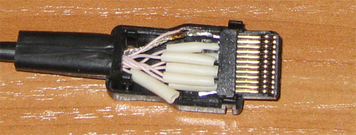
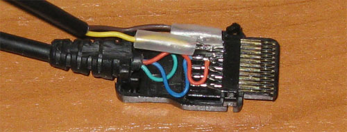
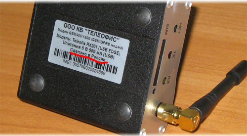

Отправка SMS через GSM модем Siemens/Nokia (RS-232/USB)
Невозможно переоценить важность оперативного мониторинга. Имея хорошую систему мониторинга, Австралийская компания, из предыдущей заметки, могла бы избежать счёта на 120 000 долларов. Для ITSP, помимо всплесков трафика по экзотическим направлениям, жизненно-важно отслеживать уровень качества предоставляемых клиентам услуг.
В общем случае система мониторинга состоит из 3х частей: сбор данных, обработка и уведомления. К слову, Nagios использует именно это концепцию, дополняя её разнообразными удобствами (визуальное отображение, расписания и т.д.). Уведомление по электронной почте, первое, что приходит в голову, однако оно не всегда оперативное. Самым оперативным уведомлением на сегодня является SMS сообщение. Отправку SMS сообщений можно организовать «на коленке» с помощью мобильного телефона подключенного к серверу.
Большинство телефонов представляют собой модем, к которому можно подключиться через интерфейс RS-232 (COM порт). Основным отличием мобильного телефона от обычного модема является поддержка расширенных AT команд. Эти команды используются для управления функциями специфичными для мобильного телефона, например, приёмом и отправкой коротких сообщений (SMS).
Традиционно считается, что для отправки SMS с ПК лучше всего подходят мобильные телефоны Siemens. Для реализации мобильных уведомлений, я запасся несколькими моделями: парочкой ME45 и одним A50. Первая неудача с телефонами Siemens ждала меня на этапе подсоединения к ПК. Оказывается, не все дата-кабели одинаковые.

Вот, этот например, определялся телефоном как гарнитура, и имел большое количество распаянных контактов внутри. Однако соединение по RS-232 установить с таким кабелем невозможно. Конечно, нельзя исключать, что мне попался бракованный экземпляр, но, как говорится, осадок то остался.

А вот так выглядит правильный дата-кабель доработанный мной. GND, RX, TX — все что нужно для работы по RS-232. Однако после доработки кабеля всплыла вторая проблема с телефонами Siemens. Все аппараты, имевшиеся у меня, выключались вскоре после того как аккумулятор был полностью заряжен. Т.е. их невозможно было эксплуатировать постоянно подключенными к сети. Вероятно это такой способ защиты аккумуляторов. Списать это на случайность не получится при всём желании.
В принципе, на этом можно было и остановить некрофильские эксперименты с аппаратурой фирмы Siemens, однако совесть потребовала идти до конца. Как я уже писал выше, для приёма и отправки текстовых сообщений через GSM модем используется специальный набор AT команд. Подробней об этом наборе можно почитать здесь. В общем случае отправка SMS выглядит вот так:
# picocom /dev/ttyS0
AT
OK
AT+CMGF=1
OK
AT+CMGS="+85291234567"
It is easy to send text messages.^Z
Если телефон поддерживает текстовый режим отправки SMS, или вот так:
# picocom /dev/ttyS0
AT
OK
AT+CMGS=42
07915892000000F0
01000B9158922143
65F7000021493A28
3D0795C3F33C88FE
06CDCB6E32885EC6
D341EDF27C1E3E97
E72E^Z
- если текстовый режим телефоном не поддерживается. Для активации текстового режима используется команда AT+CMGF=1, чтобы узнать, какие режимы поддерживаются Вашим телефоном, следует выполнить команду AT+CMGF=?.
Как вы уже догадались, третья проблема с телефонами Siemens заключалась в том, что ни один из имевшихся телефонов не поддерживал текстовый режим. Работая с PDU режимом Вы вынуждены генерировать сложную структуру содержащую в себе множество разнообразных параметров. Для работы с данной структурой Вам придётся либо изобрести велосипед и написать собственное API либо воспользоваться одной из существующих библиотек/программ (gsmlib, xgsmlib, Gammu и т.д.). Лучшим вариантом, на мой взгляд, является программа Gnokii
Намучавшись с сименсами, я решил опробовать устройство, которое изначально было бы рассчитано на постоянное использование в паре с ПК. Выбор мой пал на GSM/GPRS модем Teleofis RX201 (USB EDGE).
Приобрел я этот девайс за 3700 рублей, дороговато, по сравнению с рекламируемыми GPRS модемами от БиЛайн/Мегафон/МТС. По заверениям производителя (ООО КБ «Телеофис»), устройство произведено в России — мелочь, а приятно.

При подключении к ПК с linux, устройство определяется как «USB FTDI Serial Converter». Соответствующий модуль (ftdi_sio) автоматически создаёт файл устройства /dev/ttyUSBN. Этот файл вы можете использовать для связи с модемом, с помощью вашего любимого терминала (например picocom). Хочу обратить внимание на то, что устройство RX201 по умолчанию рассчитано на скорость 460800 кб/сек. Драйвер, идущий с Fedora 10 (ftdi_sio: v1.4.3) такую скорость не поддерживает. Что бы понизить скорость на модеме, к нему необходимо подключиться из альтернативной ОС и выполнить команду AT+IPR=115200&W.
Модем Teleofis RX201 отлично подружился с программой gnokii. Для отсылки sms с помощью gnokii сперва необходимо изменить конфигурационный файл /etc/gnokiirc. Вот пример рабочего конфига:
[global]
port = /dev/ttyUSB0
model = AT
initlength = default
connection = serial
use_locking = no
serial_baudrate = 115200
Обратите внимание на параметр use_locking, если Вы собираетесь рассылать SMS из Nagios, следует использовать use_locking = yes, что бы избежать конфликтов при рассылке уведомлений нескольким адресатам. Отправляется SMS очень просто:
|
echo 'ya sms-ko !' | gnokii --sendsms +79260000000 |
Вот и всё! SMS с текстом ‘ya sms-ko !’ будет отправлена на номер +79260000000.
Модем Teleofis RX201 работает уже почти месяц. В среднем в сутки отправляется около 10 сообщений. Никаких претензий и нареканий за этот небольшой срок не возникло, однако настораживает наличие модели Teleofis RX201-R единственное отличие которой — встроенный таймер перезагрузки.